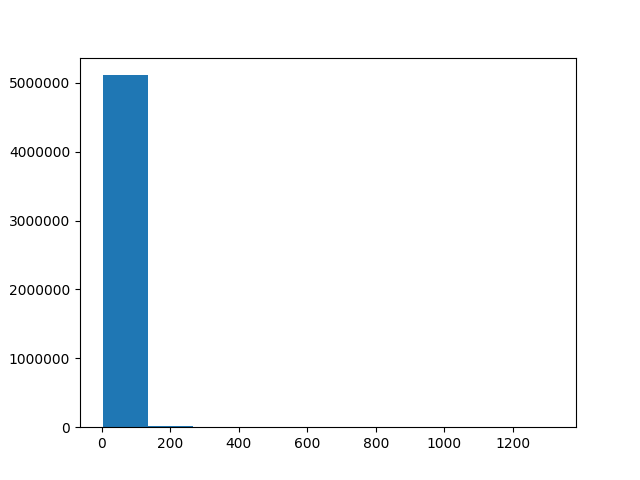
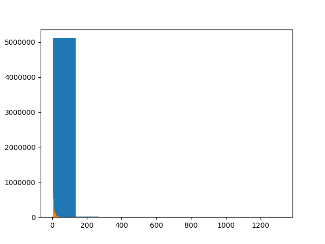
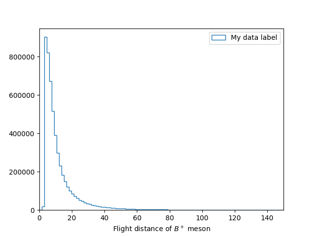
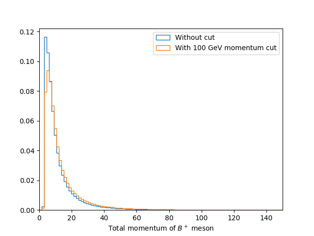

Making your first histogram
In this section we are going to make our first plots using Python. For this we will use some public LHCb data for \( B^+ \rightarrow H^+ H^+ H^- \) from the CERN open data portal. This data is available on EOS:
$ eos root://eospublic.cern.ch/ ls /eos/opendata/lhcb/AntimatterMatters2017/data
B2HHH_MagnetDown.root
B2HHH_MagnetUp.root
PhaseSpaceSimulation.root
Installing python packages inside a virtual environment
It is however usually preferable and safer to do everything inside a virtual environement. The latter is like a copy of your current environement. Thus you can modify your virtual environement (including installing/deleting/updating modules) without affecting your default environement. If at some point you realize you have broken everything, you can always exit the virtual environement and go back to the default lxplus one.
To enter a suitable environment you can use:
lb-conda default bash
You can then install stuff with pip. In this lesson we will be using
root_pandas, which can
be installed using:
pip install --upgrade root_pandas matplotlib
python -c 'import pandas; print(f"Got pandas from {pandas.__file__}")'
python -c 'import root_pandas; print(f"Got root_pandas from {root_pandas.__file__}")'
python -c 'import matplotlib; print(f"Got matplotlib from {matplotlib.__file__}")'
You can go back to the default environement using the deactivate command.
Installing python packages directly (not the recommended way)
Even if not recommended, you can also install modules directly, without using a virtual environment.
While LCG provides a lot of useful packages, there are sometimes things missing.
Fortunately, most packages can be easily installed into ~/.local/ using pip
with the --user flag. In this lesson we will be using
root_pandas, which can
be installed using
pip install --user root_pandas
Some packages, such as flake8, provide executables
which are useful to have included on your PATH so they are available without
specifying their absolute path. This can be done by running
export PATH=$(python -m site --user-base)/bin:$PATH
see the bash lesson for more details about the PATH variable.
We can even upgrade already installed packages using:
pip install --user matplotlib --upgrade
As LCG uses PYTHONPATH to make packages available, any packages it provides
have higher priority than the user installed packages. In order to make it so
that a package installed with --user takes precedence, you must run
export PYTHONPATH=$(python -m site --user-site):$PYTHONPATH
every time you run the source command above. This is only needed when
installing user packages to upgrade LCG provided ones.
All ROOT methods made available in Python using a set of automatically generated
bindings, known as PyROOT.
These are all available by using import ROOT.
For example if we want to create a TFile using the aforementioned data we can
launch ipython and run:
In [1]: import ROOT
In [2]: filename = 'root://eospublic.cern.ch//eos/opendata/lhcb/AntimatterMatters2017/data/B2HHH_MagnetDown.root'
In [3]: my_file = ROOT.TFile.Open(filename)
In [4]: my_file.ls()
TNetXNGFile** root://eospublic.cern.ch//eos/opendata/lhcb/AntimatterMatters2017/data/B2HHH_MagnetDown.root
TNetXNGFile* root://eospublic.cern.ch//eos/opendata/lhcb/AntimatterMatters2017/data/B2HHH_MagnetDown.root
KEY: TTree DecayTree;1 Tree continaing data for B- --> h-h+h- decays
In [5]: my_tree = my_file.Get('DecayTree')
In [6]: my_tree.Print()
******************************************************************************
*Tree :DecayTree : Tree continaing data for B- --> h-h+h- decays *
*Entries : 5135823 : Total = 945201357 bytes File Size = 666480138 *
* : : Tree compression factor = 1.42 *
******************************************************************************
While it is very useful to be able to access all the ROOT functionality in this way, they are often slow and tedious to use. Luckily people have built more specialised bindings to allow ROOT to be used in a more pythonic way.
Pandas
pandas is a library for doing data analysis on
tabular data, using a data structure known as dataframes. These typically have
columns with labels (like TLeafs in a TTree) with many rows. The
root_pandas package we installed earlier can be used to create a pandas
DataFrame from a root file:
In [7]: import root_pandas
In [8]: df = root_pandas.read_root(filename, key='DecayTree')
We can then use df.head(5) to see the first 5 rows of the DataFrame:
In [9]: df.head(5)
Out[9]:
B_FlightDistance B_VertexChi2 H1_PX H1_PY H1_PZ \
0 25.301004 1.497280 375.284205 831.308481 51820.233718
1 94.690700 1.383338 -4985.130785 5853.750057 326157.454706
2 8.284490 5.187101 -1265.456544 2330.050788 90762.658032
3 5.590769 7.129099 -720.797259 3413.790588 86793.058768
4 3.013242 10.988701 397.754571 1791.373059 40040.364159
While it is nice to be able to view the data, it is typically much more useful to
be able to apply operations to it in bulk. In this example we have the momentum
components for each of the child particles in the decay (H1, H2 and H3)
but not the transverse momentum. We can however apply expressions to each row
of the data like so:
In [10]: df.eval('sqrt(H2_PX**2 + H2_PY**2)')
Out [10]: 0 1306.642724
1 167.578904
2 1273.457019
3 1146.299204
...
5135820 210.430531
5135821 762.344570
5135822 1454.471057
dtype: float64
This gives us the transverse momentum for each particle as an array, however, we can also create a new column with this information by assigning to the name we want to create and doing the action “inplace”:
In [11]: df.eval('H2_PT = sqrt(H2_PX**2 + H2_PY**2)', inplace=True)
Adding the total B+ meson momentum
Create a new column in the dataframe called B_P for the total momentum of the
B+ meson.
Solution
df.eval('B_P = sqrt('
'(H1_PX + H2_PX + H3_PX)**2 + '
'(H1_PY + H2_PY + H3_PY)**2 + '
'(H1_PZ + H2_PZ + H3_PZ)**2'
')', inplace=True)
Plotting histograms
Now that we have the momentum of the \( B+ \) meson, it would be useful to plot
its distribution in a histogram. We could use ROOT for this but the most popular Python library for
plotting is known as matplotlib and this is what we
will use here. The most common way matplotlib is used is with the pyplot
interface imported as plt like so:
In [12]: import matplotlib
In [13]: matplotlib.use('Agg') # Force matplotlib to not use any Xwindows backend.
In [14]: from matplotlib import pyplot as plt
In [15]: plt.hist(df['B_FlightDistance'])
In [16]: plt.savefig('B_flight_distance.pdf')

Interactive plotting
There are various ways of viewing plots interactively such as:
plt.show()Opens a window with the current plot and pauses the Python interpreter until the window is closedplt.ion()Allows plots to be viewed without pausing the Python interpreterjupyterA web based interface for running various languages including python in “notebooks”. If you’ve usedmathematicaormatlabbefore it’s a similar interface with code, documentation and plots all shown together.
In [17]: import numpy as np
In [18]: bins = np.linspace(0, 150, 100)
In [19]: plt.hist(df['B_FlightDistance'], bins=bins)
In [20]: plt.savefig('B_flight_distance_v2.pdf')

That’s not right! The new histogram has been plotted on top of our first one!
This is normally useful as it allows us to layer plots on top of each other to compare them. Though in this case we don’t want to do that so we should first close the previous plot before making our histogram. We should also add axis labels and a legend like so:
In [21]: plt.close() # Close the previous plot
In [22]: plt.hist(df['B_FlightDistance'], bins=bins, histtype='step', label='My data label')
In [23]: plt.xlim(bins[0], bins[-1])
In [24]: plt.xlabel('Flight distance of $B^+$ meson')
In [25]: plt.legend(loc='best')
In [26]: plt.savefig('B_flight_distance_v3.pdf')

Applying cuts
When analysing data it is often useful to “throw away” some data in order to in order change the contributions of a sample. Most commonly this is to remove some background(s) so we can more precisely study a process of interest. This is known as cutting.
In pandas we can apply a cut to a DataFrame using the query method. For
example to make a new DataFrame containing \( B^+ \) mesons with flight distances
of more than 15 mm we can use:
In [27]: df_with_cut = df.query('B_FlightDistance > 15')
Comparing momentum distributions
It is often useful to compare the effect of a cut on the distribution of another variable. Try to plot a histogram showing the B+ lifetime distribution with and without a total B+ momentum cut of 100000 MeV.
Solution
bins = np.linspace(0, 150, 100)
df_with_cut = df.query('B_P > 100000')
plt.figure()
plt.hist(df['B_FlightDistance'], bins=bins, histtype='step', density=1, label='Without cut')
plt.hist(df_with_cut['B_FlightDistance'], bins=bins, histtype='step', density=1, label='With 100 GeV momentum cut')
plt.xlim(bins[0], bins[-1])
plt.xlabel('Total momentum of $B^+$ meson')
plt.legend(loc='best')
plt.savefig('B_flight_distance_with_cut_compare.pdf')
Here we also use the normed=True option with plt.hist, this plots the
normalised distribution. This is typically more useful when comparing
distributions as it make it easier to see differences in the shape without the
independently of the total number of events.

Comparing momentum distributions
Calculate and plot the B+ meson mass assuming that all three of the child hadrons are kaons.